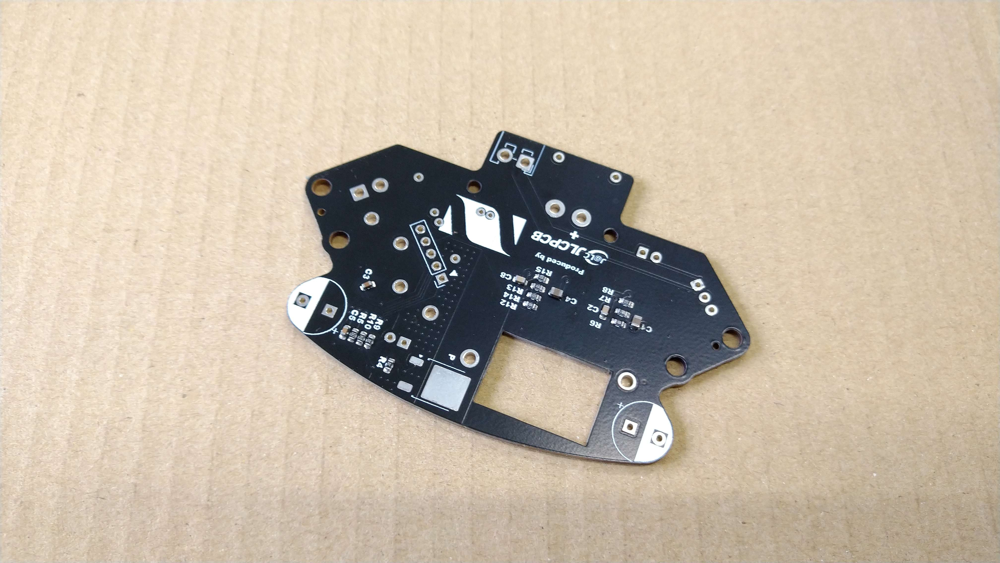
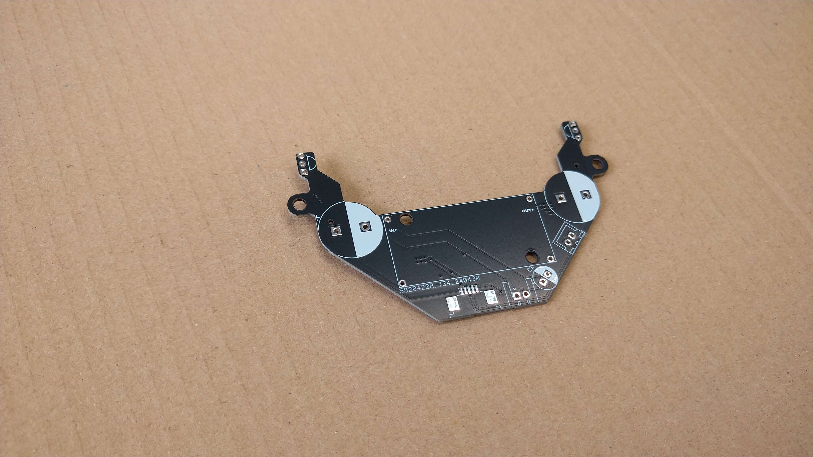

TOINIOT² Blog
基板基板！
2024-05-21 Writer: 010
進級後一発目の記事はやっぱり(?)JLCPCB様に基板を頼ませてもらったお話から。
今回は電源基板とキッカー基板を注文させていただきました。詳細の説明の前にまずはJLCPCB様について。
JLCPCBは主に基板製作を手掛けている会社です。しかし、それだけではなく、3DプリントやCNC加工なども行っており、彼らに作れないものはない！と言っても過言ではありません。
そして、JLCPCB最大の特徴は「安い」「早い」「正確」の3拍子がそろっていること。商品自体は１＄から発注可能、工場は海外にあるのに、空輸とはいえ発注から2週間かからずでの到着はかなり魅力的です。
もちろん、確立された機械生産によって不良品に当たる可能性はほとんどなく、少なくても僕たちは一度も遭遇していません(僕たちの設計ミスはたくさんありましたが(笑))。今ならクーポンもゲットできるみたいです。
この機会をお見逃しなく！！

↓JLCPCB様のHP
https://jlcpcb.com/
↓クーポンゲットのチャンス！
https://jlcpcb.com/JPV
さて、ここからは基板の紹介。冒頭でもお話ししましたが、今回は電源基板とキッカー基板の2種類を頼ませていただきました。それがこちら。

左が電源基板。以前(電源、大事、マジで。)にも触れましたが、
電源基板はロボットの要であると同時に、その機能ゆえショートなどのトラブルが起こりやすい箇所でもあります。はっきり言ってエッチングで自作は危険です。
制作時、配線に不備が生まれれば大炎上も起こりえます。その点、JLCPCB様に頼むと自分たちの設計ミスさえなければ完璧なものが届くわけです。

そしてキッカー基板。電源基板同様高級感ある黒が美しい！
ちなみに、中央にある謎の四角で囲われた空間にはソレノイドを動かすための昇圧回路基板がのります。僕たちが使っているのは
コレ。
サイズの割に昇圧できる電圧が大きく、キッカーにはもってこいです。値段もそこまで高くないし(笑)
今回は以上となります。最後まで読んでいただきありがとうございました。